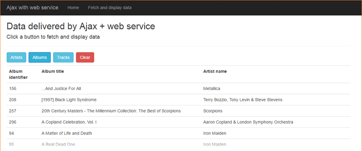

INT422 – Lecture 11 Part 2
More work with Ajax.
Code examples
Ajax Item Select
Ajax With Web Service
Ajax – cascading (dependent) item-selection element
All of us have had the experience with a web – or other – app displays a sequential series of hierarchical item-selection elements.
For example, using the familiar music business problem domain, we can drill down from Artist, to Album, to Track.
This is an ideal use case for Ajax. The reason is that the technique 1) preserves the view/page state for the user, with no flicker or reloading, and 2) it offers good performance. Yes, we could do this by using the typical full-page GET/POST cycle, but let’s use Ajax.
Open and study the AjaxItemSelect code example as you read this section.
What code assets are needed?
As you have seen in the first Ajax example (SearchMusic), we need:
What makes it work?
The key feature that makes this work is that the HTML <select> element includes the onchange event handler declaration. It passes the element to the JavaScript function, which fetches the new content, and places it in the appropriate element.
Using the Attention comment tokens in Visual Studio, study the code to learn its flow, as you run the app.
Run the app. Click the image to open it full-size in a new tab/window.
Select an artist from the list. Notice that the artist’s list-of-albums appears. Click the image to open it full-size in a new tab/window.
Select an album from the list. Notice that the album’s list-of-tracks appears. (Notice also that you can go back up to the list of artists, make a new selection, and it will refresh the list of albums.) Click the image to open it full-size in a new tab/window.
When you click the Send button, ALL your selections are packaged and posted to the DoSomething() method in the controller.
An introduction to web services
A web service is an application that runs on a web server, and is accessed programmatically.
Compare this to a web app: A web app is an application that runs on a web server, and is accessed by using a web browser.
Web services are designed to deliver data, not HTML.
Web services are a vital part of today’s modern software architecture. They provide the power and data behind mobile applications. They enable standards-based enterprise and public applications that can be deployed at web scale.
Web services in the ASP.NET MVC framework
In the framework, there is a special kind of controller for web service purposes, ApiController. You may have noticed during the “Add > Controller” workflow that the dialog shows a lengthy list of “Web API 2…” controllers. They are all based on the ApiController superclass.
The ApiController class has similarities to, and differences with, the base ASP.NET MVC Controller class.
Similar characteristics:
Different characteristics:
Adding the web service capability to an existing project
It is easy to add web service capability to an existing project. It’s a three-step process to get started:
Install a package…
Open the NuGet Package Manager (in Solution Explorer, right-click the project item, then Manage NuGet Packages).
In the “Browse” tab textbox, search for “web api”.
Choose/select the item named “Microsoft.AspNet.WebApi”. It’s probably the top choice. Then install.
Add a configuration class…
In the App_Start folder, create a new source code file for a C# class. The name of the source code file and class is, by convention, “WebApiConfig.cs”. Add code to make it look like the following. (Most simple web service apps can use the same configuration code.)
1. using System;
2. using System.Collections.Generic;
3. using System.Linq;
4. using System.Web.Http;
5. namespace AjaxWithWebService
6. {
7. public static class WebApiConfig
8. {
9. public static void Register(HttpConfiguration config)
10. {
11. config.MapHttpAttributeRoutes();
12. config.Routes.MapHttpRoute(
13. name: "DefaultApi",
14. routeTemplate: "api/{controller}/{id}",
15. defaults: new {id = RouteParameter.Optional }
16. );
17. }
18. }
19. }
Edit app startup…
Edit the Global.asax.cs source code file, which holds the MvcApplication class code.
After the “AreaRegistration…” statement, add this new statement:
1. GlobalConfiguration.Configure(WebApiConfig.Register);
2.
At this point in time, you can add a web service controller (“…Web API 2…”) to your project.
Deliver and render data
Open and study the AjaxWithWebService code example as you read this section.
As it shows, you can click a button, to fetch and display data. Click the image to open it full-size in a new tab/window.
For example, after the “Albums” button is clicked, a list of albums appears. Click the image to open it full-size in a new tab/window.

How does this work?
As noted earlier, we use the same approach to Manager class and view model class design.
In the Manager class, there are methods which simply fetch and return collections. Also, there are familiar-looking view model classes.
There is a new web service controller. It has methods which call manager methods, and return collections. The built-in request handling pipeline in ASP.NET MVC (and Web API) will deliver the results as JSON.
The “Data” view has buttons. Each calls the JavaScript fetchData() function.
That function calls into a resource URL (e.g. /api/deliverdata/albums), which is handled by the web service controller. As noted above, plain-text JSON is returned to the JavaScript function. You can see the plain-text JSON in the developer tools JavaScript console. Click the image to open it full-size in a new tab/window.
After receiving the JSON, the JavaScript function calls entity-specific functions to write/create the HTML table, and the “Data” view is updated.
Want to learn more about web services?
Prof. McIntyre typically teaches a Web Services course, as a pro option, in the fall term.
{kind=link}
{kind=link}
{kind=link}
{kind=link}